Screenshots#
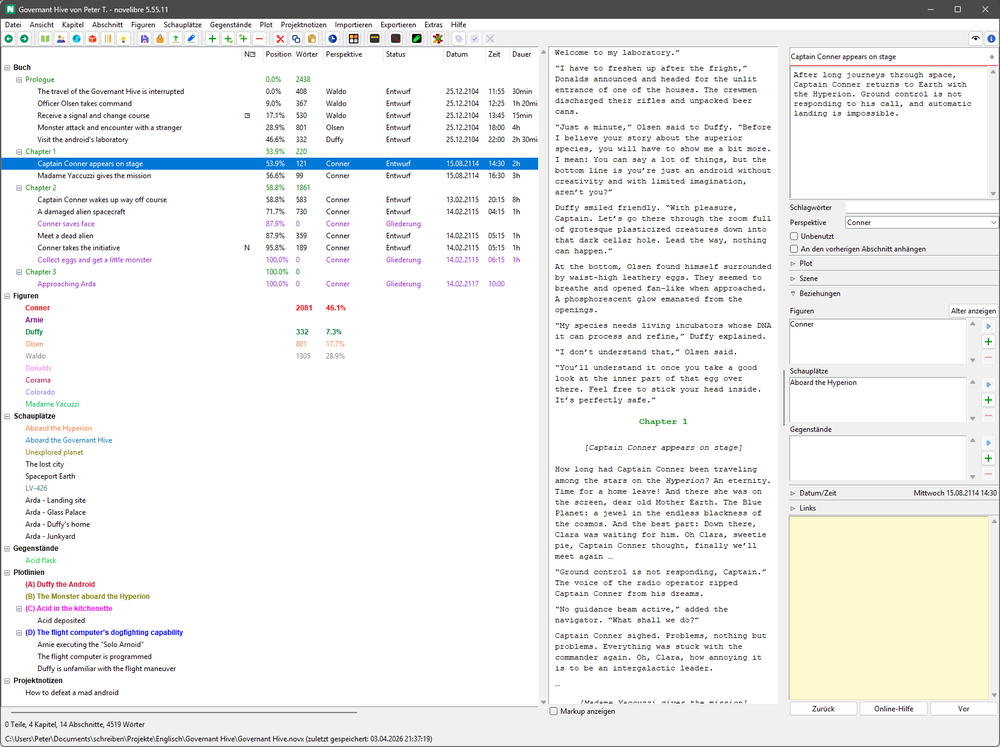
This is how the novelibre organizer workspace looks like#

This is the manuscript to work on. novelibre generated it and passed it to LibreOffice Writer#
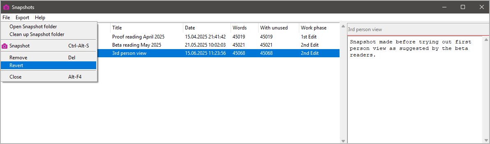
Versions stored using the nv_snapshots plugin#
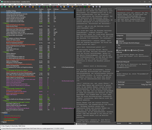
Dark mode with the nv_themes plugin#
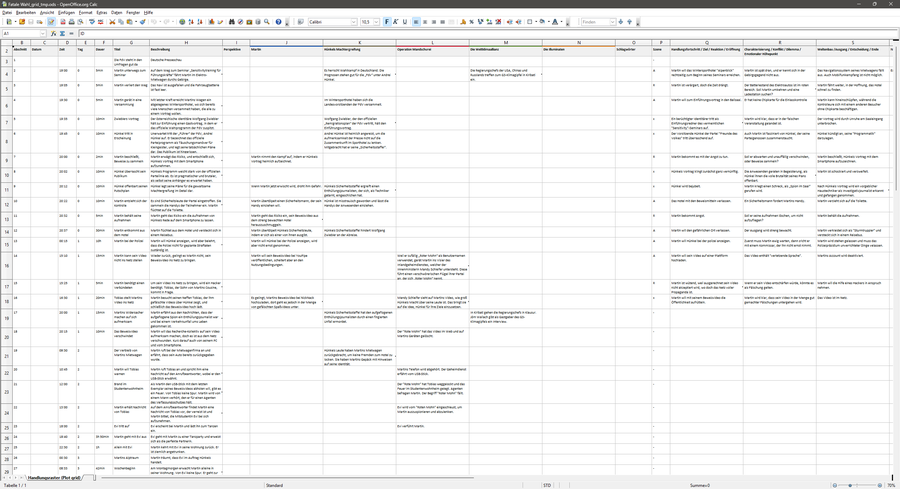
Editable plot grid in OpenOffice Calc#
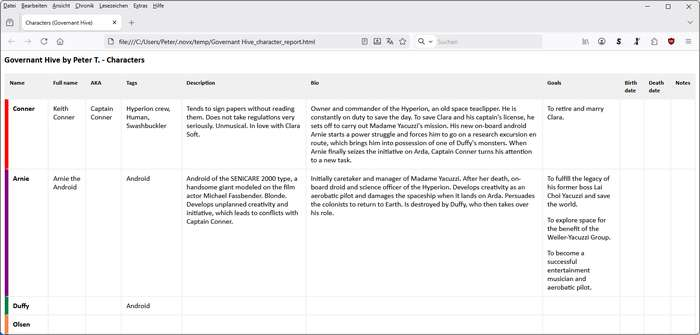
Character table, displayed with the system web browser#
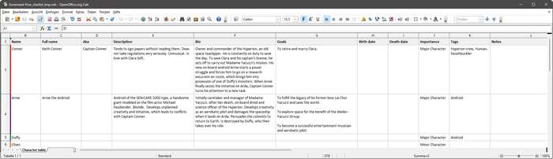
Editable character table in OpenOffice Calc#
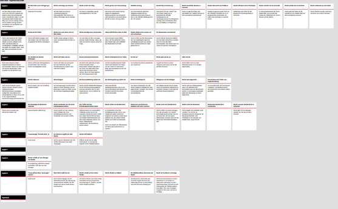
Chapter board, in which the sections are arranged by chapter#
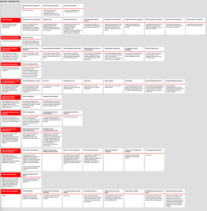
Story structure board, in which the sections are arranged by stage#
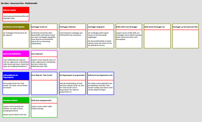
Plot line board, in which the plot points are arranged by plot line#
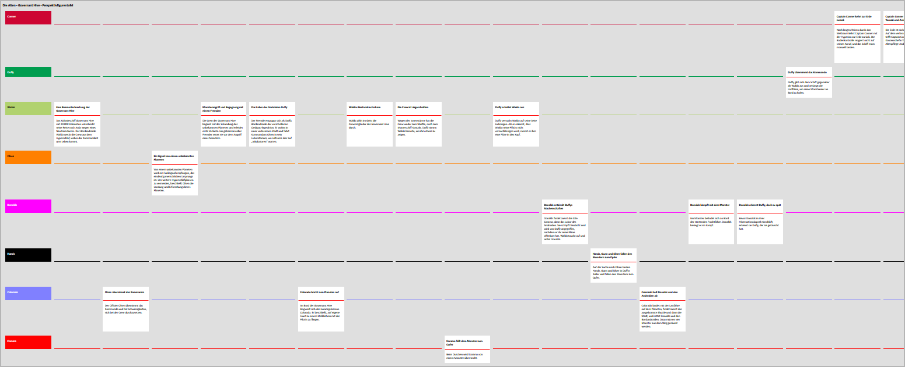
Viewpoint board, in which the sections are arranged by viewpoint character#
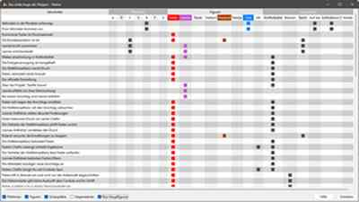
Viewing and editing relationships with the nv_matrix plugin#
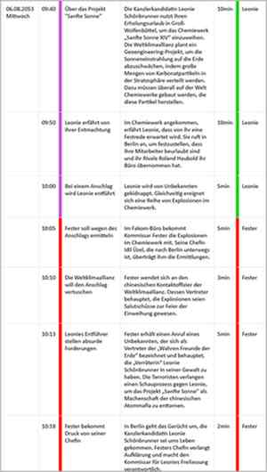
Time table, displayed with the system web browser#
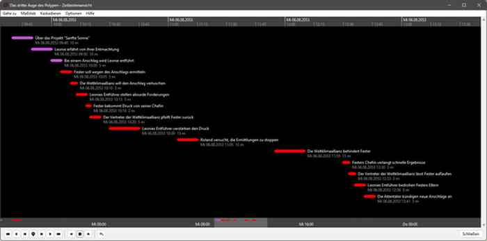
Interactive timeline view with the nv_tlview plugin#
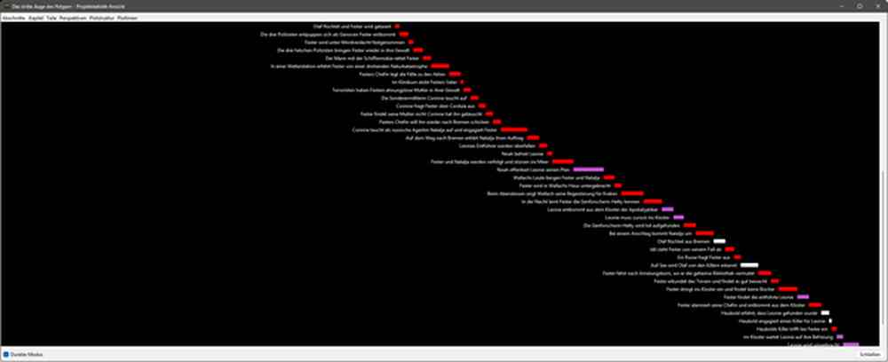
Visualizing the distribution of text volume across sections with the nv_statistics plugin#
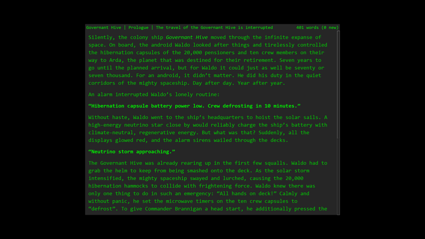
Distraction-free writing mode with the nv_writer plugin#
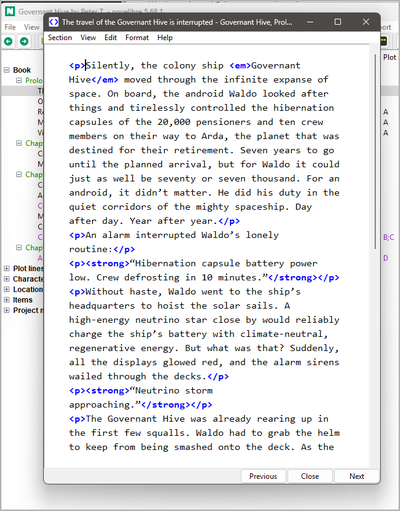
Section editor showing XML markup with the nv_editor plugin#